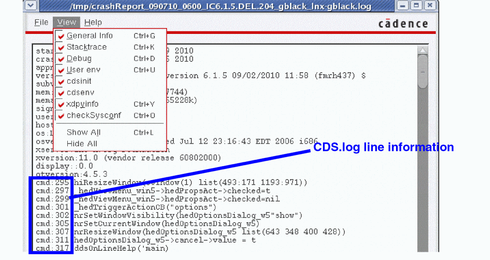

Application Crash Reporting
In Virtuoso, a report gets generated on application failure or crash. This crash detector report automatically records an abridged version of crash data, including command logs and stack traces, for example, SKILL calls are included in the stack trace to assist crash investigations.
This information may subsequently assist in the debugging of critical software problems and also provide a means of tracking essential data which can be useful when attempting to identify key failure trends across specific applications as well as Virtuoso itself.
A crash report is not intended to provide a description of all possible debugging techniques, nor does it provides a description of how to categorize trends or crash information.
When an incorrect termination of an application occurs, a Fatal Application Error dialog is displayed alerting you of this fact. The data is collected and made available in report format, in an ASCII text file, that includes a range of basic environment information. From the Fatal Application Error dialog you can chose to view the crash report that has been generated by selecting View Report from the dialog box.
-
Before closing the Fatal Application Error dialog, specify the nature of the Virtuoso crash, as this assists Cadence in its software crash investigations. In addition to the Crash Report, the option you select gets stored in
STARTINFO_FILE.-
Select Virtuoso unexpectedly crashed if the software terminated unexpectedly without manual intervention.
If this option is selected, the following gets added to the Crash Report window:signal:Abort(6) ****PROCESS CRASHED****
-
Select Virtuoso killed due to hang or slowness if you manually terminated the software due to poor responsiveness.
If this option is selected, the following gets added to the Crash Report window:signal:Abort(6) ****PROCESS KILLED DUE TO SLOWNESS****
-
Select Virtuoso killed (non-bug) if you manually terminated the software for a reason other than poor responsiveness.
If this option is selected, the following gets added to the Crash Report window:signal:Abort(6) ****PROCESS KILLED BY USER****
-
If you do not select a crash reason option before selecting the Close or View Report buttons, the following gets added to the Crash Report window:
signal:Abort(6)
-
Select Virtuoso unexpectedly crashed if the software terminated unexpectedly without manual intervention.
-
If a
SEGFAULThappens (again) inside thevirtuosocrash hooks, the signal gets delivered directly to, and processed by, the crash report. -
If
virtuosois being run innographmode, the Fatal Application Error window does not get displayed. Rather, crash report information is sent to thestderrlog. -
It is requested that you check the Application was killed by user... option if that was the case, as establishing if
virtuosowas killed intentionally going to focus attention on genuine software crashes.
If you chose View Report, the Crash Report window is displayed.
- From here, you can choose to save the contents of the report to a text file (File – Save As) for re-use, or select File – Close to exit the report after viewing.
- Additionally, within the File menu, you can choose to Copy report text, Select All report text, or Find particular report information using the Find text form.
- You can also use the View menu to choose what categories of crash information that you want to display in the crash report. For example, you can choose to show or hide information on Stacktrace, Debug, and/or cdsinit.
-
The crash report information is also appended to the
CDS.logfile. You can, for example, then refer to this log file for details on where the report file can be located.
On crash, a copy of theCDS.logfile gets saved to the crash report directory, and renamed<crashReportName>/CDS.log. See also SAVELOGS=ONCRASH in the Customizing Crash Reports section. TheCDS.logfile additionally saves the date and time of crash. Also, in case Virtuoso crashed because of an external signal, the signal name also get saved in theCDS.logfile. In the earlier releases, the date and time of crash and the signal name were only saved in the crash reports. - The crash report also prints any crash signals sent by a user
-
Relatedly, the crash report also lists the last ten errors, warnings, and commands listed in the
CDS.logfile. These crash report lines (that is, those referring tocmd:,warning:, anderror:lines) are listed with their relevantCDS.logline number to aid log investigations.
Related Topics
Return to top